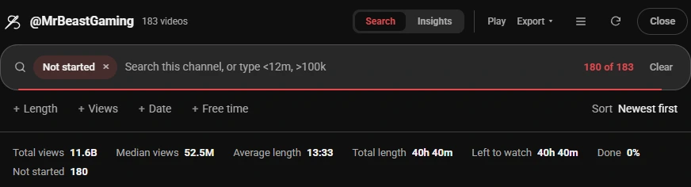

Guide 25·Channels
How to see only the videos you haven't watched on a YouTube channel.
Updated 19 November 2026
Short answer
YouTube can't do it on a channel. It draws a red bar under every video you've started, but a channel's tabs have no filter for them, and neither does the channel's search box. Needle, a free Chrome extension, reads every upload on the channel along with your progress on each, so its Watched filter can leave only what you haven't started, or haven't finished.
01·On YouTube
What YouTube shows you
Signed in, every video you've started has a red bar along the bottom of its thumbnail, as long as the share of it you watched. That's all a channel page gives you. Its Latest, Popular and Oldest chips sort, none of them filters, and the channel's search box matches words only.
The one place YouTube does filter is its main search, where signed-in results have an Unwatched chip. Search a channel's name and press it, and you get videos you haven't watched, but it's still a search: other channels' videos come in, and it shows what the search found, not the whole channel.
02·With Needle
Only the unwatched ones, with Needle
- Open the channel's Videos tab, signed in.
- Press the needle button in the bottom right corner, or Alt+Y. Needle reads every upload, with how far you got in each.
- Open + Watched and pick what to keep.
- Not started: never opened. Or type
unwatched. - Not finished: not started, plus the ones you left partway.
- Still watching: only the ones you left partway. Or type
is:started. - Finished: the ones you're done with. Or type
is:watched.
On one channel checked for this guide, that split 236 videos into 222 not started, 7 still watching and 7 finished. The count above the grid says how many are left.

03·Combine it
Make a plan of it
unwatched >20m | Long ones you haven't started |
unwatched <10m | Quick ones you haven't started |
unwatched before:2020 | Older videos you never got to |
unwatched >500k | The channel's popular ones you've missed |
Sort it Oldest first and it's the channel's back catalogue in order, minus what you've seen. Most views puts its best-known videos you haven't watched at the top. Free time, in the same row, keeps only what fits in the minutes you have, and Play plays what's showing, in that order, 50 at a time.
04·What counts
What counts as watched
Finished, not opened. Needle reads the red bar YouTube draws under each thumbnail, and treats 90% or more as done. If that's the wrong line for you, change Finished at in Needle's settings (All settings, in the popup), anywhere from 50 to 100. To leave finished videos out of every channel without picking anything, turn on Hide finished videos there too.
What it can't see is what YouTube never kept: videos watched while history was paused, history that auto-delete has cleared, and anything watched signed out or on another account.
05·Lists and search
Everywhere else
On Home and Subscriptions, Needle's Hide watched chip takes out everything you've finished in one click: hiding watched videos. On a playlist or Watch Later, the same Watched filter is in the panel (searching Watch Later). And for the rest of what the channel panel does, searching a whole channel.
06·Questions
Questions?
Can YouTube hide watched videos on a channel?
No. Search results have an Unwatched chip when you're signed in, but a channel's Videos tab and its own search have nothing like it.
What counts as watched?
Finished means 90% of the way through by the red bar, unless you change Finished at in Needle's settings. Started but short of that counts as Still watching.
Why does a video I've seen show as unwatched?
Needle goes by the progress YouTube keeps. If your history was paused or auto-deleted when you watched it, or you watched signed out or on another account, YouTube has no bar for it, so Needle doesn't either.
Does it work signed out?
No. Watch progress belongs to your account, so signed out every video looks unwatched. Sign in to YouTube in the same browser.
Can I leave finished videos out every time?
Yes. Turn on Hide finished videos in Needle's settings, and what you've finished stays out of the panel on every channel until you turn it off.
Does it work on playlists too?
Yes. The same Watched filter is in the panel on any playlist, on Watch Later and on your Liked videos.
Is my watch history sent anywhere?
No. Needle has no server. It reads your progress from YouTube's own pages, keeps it on your device, and never sends it anywhere.
Is it free?
Yes. No account, no trial, no paid tier.